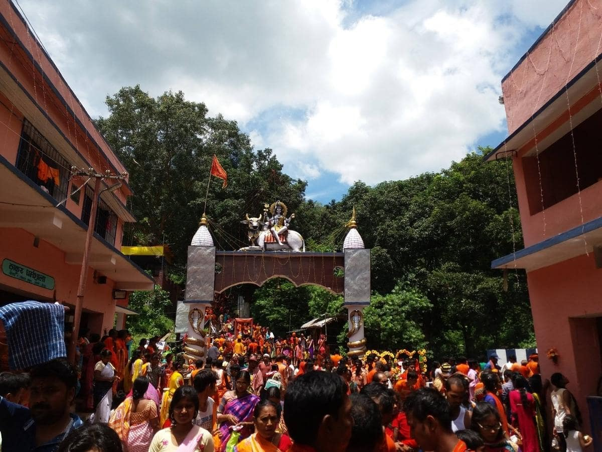
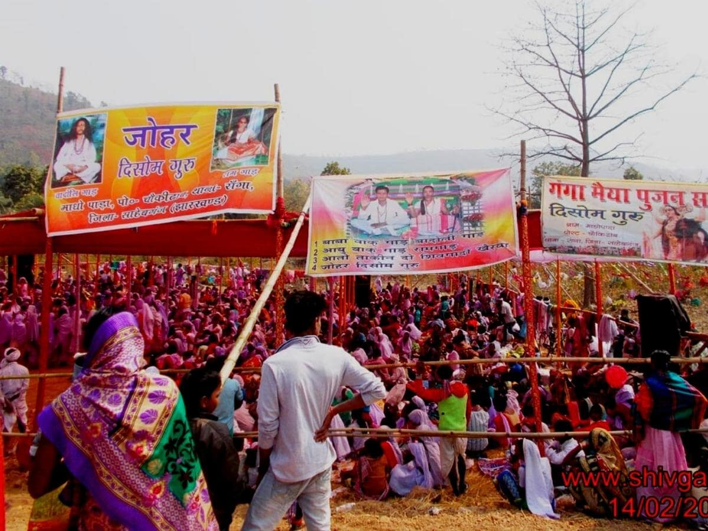

SAHIBGANJ
(The Center of Beauty of Nature)
SHIVGADI
The Shivgadi Temple is a Lord Shiva Temple situated 8 km north of Barhait. This temple is located inside a cave. The specialty of this temple is that the mountain here continuously drops water on the Shiva Lingam present here. This temple sees many visitors during the month of Shravan, as well as on Mahashivratri. Water from the mountain drips continuously on the Shivling. Devotees gather here in large numbers on Mahashivratri and whole of Shravan month.

